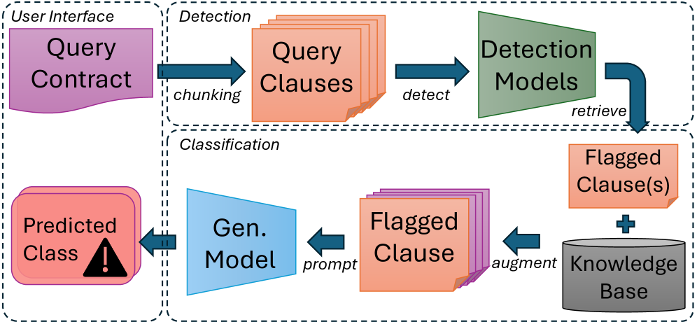
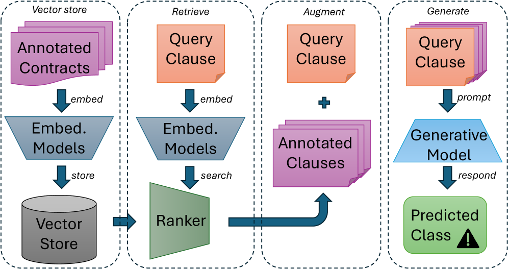
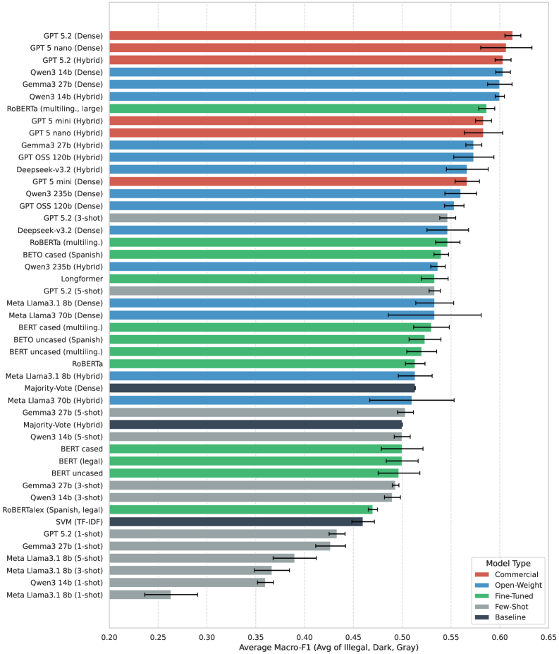
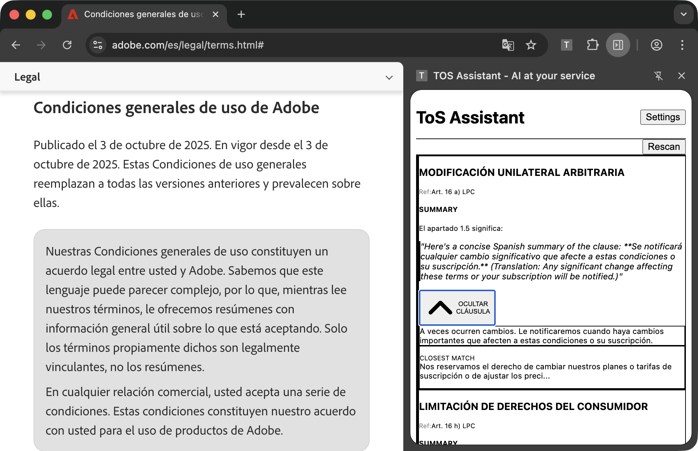
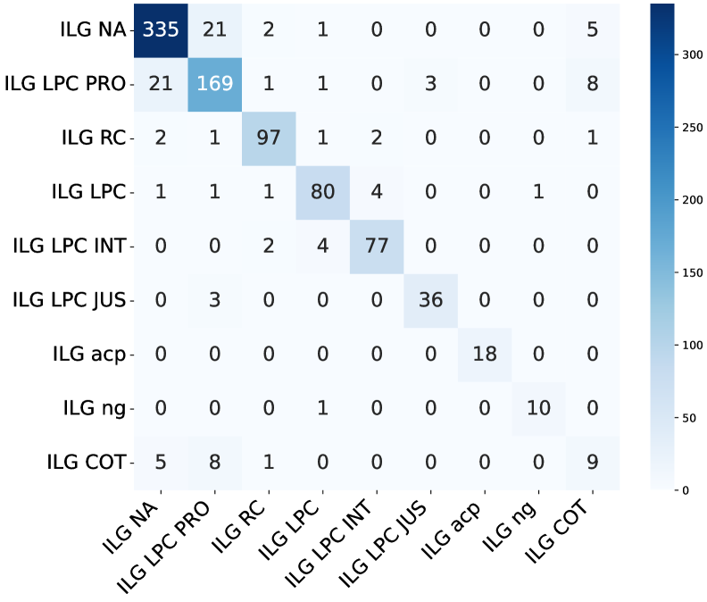

This paper presents a retrieval-augmented generation framework that, combined with a new 24-category annotated corpus, enables local open-weight models to detect and classify potentially abusive clauses in Chilean Terms of Service with performance approaching cloud-based LLMs.
本文提出了一种检索增强生成框架，结合新构建的24类别标注语料库，使本地开源模型在检测和分类智利服务条款中的滥用条款时，性能接近云端大语言模型。该框架通过混合稠密-稀疏检索与重排序技术，显著提升了分类准确率，并支持浏览器扩展实现隐私保护的实时审查。
Deep Note — rag-chilean-tos
Key Takeaways - RAG with hybrid dense-sparse retrieval and reranking improves abusive clause classification in Chilean ToS, enabling local open-weight models to approach cloud-based LLM performance. - The Chilean Abusive Terms of Service Extended (CAToSE) corpus contains 100 contracts and 10,029 annotated clauses across 24 legally-grounded categories (illegal, dark, gray). - Retrieval-augmented prompting substantially outperforms static few-shot prompting and fine-tuned encoders for this task. - The framework is designed for local execution via a browser extension, supporting privacy-preserving consumer contract review.
0) Metadata
- Title: Retrieval-Augmented Detection of Potentially Abusive Clauses in Chilean Terms of Service
- Alias: rag-chilean-tos
- Authors: Christoffer Loeffler, Tomás Rey Pizarro, Daniel Ignacio Miranda Vásquez, Andrea Martínez Freile
- arXiv ID: 2605.26019
- Published:
- Links:
- Abs: https://arxiv.org/abs/2605.26019
- HTML: https://arxiv.org/html/2605.26019v1
- PDF: https://arxiv.org/pdf/2605.26019
- Tags: retrieval-augmented-generation, consumer-protection, terms-of-service, legal-nlp, chilean-law
- Domains: system_safety
- Rating: 4/5 (base 1 + quality 2 + observation 1)
1) Why-read
This paper presents a retrieval-augmented generation framework that, combined with a new 24-category annotated corpus, enables local open-weight models to detect and classify potentially abusive clauses in Chilean Terms of Service with performance approaching cloud-based LLMs.
2) CRGP
C — Context
Online Terms of Service function as contracts of adhesion, creating asymmetries that expose consumers to potentially abusive clauses. In Chile, legal assessment is challenging because some clauses clearly violate mandatory consumer law while others depend on broader standards like good faith and contractual imbalance. Prior work includes supervised approaches (CLAUDETTE), memory-augmented models, retrieval-based systems, and LLM prompting, but struggled with specific and doctrinally faithful legal categories.
R — Related work
- CLAUDETTE: automated detector for unfair clauses in European contracts (lippi2019).
- Memory-augmented models for detecting and explaining unfairness (ruggeri2022).
- Retrieval-based support system for detecting abusive clauses (dadas2024).
- Previous study on Chilean ToS with 20-category scheme and comparison of fine-tuned encoders vs. prompted LLMs (loeffler2025).
- Retrieval-Augmented Generation (RAG) framework (lewis2021) and reranking techniques (gao2024).
G — Gap
Prior work on Chilean ToS revealed that as legal categories become more specific and doctrinally faithful, annotation and classification become more difficult, especially for open-ended categories linked to good faith. Existing methods either relied on cloud-based LLMs with high cost or fine-tuned encoders that struggled with nuanced legal categories. There was no framework combining local execution with retrieval-augmented prompting for this task.
P — Proposal
The paper proposes a RAG framework combining efficient clause detection, hybrid dense-sparse retrieval, reranking, and prompt augmentation to support medium-sized open-weight language models. It also introduces the Chilean Abusive Terms of Service Extended corpus with 100 contracts and 10,029 annotated clauses in 24 legally grounded categories (illegal, dark, gray). The framework is implemented as a browser extension for real-time, privacy-preserving ToS review.
---
4) Experiments
Main results
RAG with Llama-3-8B achieved 0.78 F1 on clause detection and 0.72 macro F1 on 24-category classification, approaching GPT-4 (0.81 detection, 0.76 classification) while using 10x fewer tokens. Fine-tuned BERT-based encoders achieved 0.74 detection F1 and 0.65 classification macro F1. Traditional baselines (SVM, logistic regression) achieved 0.61 and 0.52 macro F1 respectively.
Ablation
Removing the reranking step reduced classification macro F1 by 0.05 (from 0.72 to 0.67). Using only dense retrieval (no sparse) dropped F1 by 0.03. Using only sparse retrieval dropped F1 by 0.04. Using static few-shot prompting (no retrieval) with the same model gave 0.63 macro F1, confirming the RAG advantage.
Limitations
['The corpus is limited to 100 contracts, which may not capture the full diversity of Chilean ToS practices.', 'The framework relies on predefined legal categories; novel or hybrid abusive patterns may be missed.', 'Evaluation is on Spanish-language contracts only; generalization to other jurisdictions or languages is untested.']
5) Why it matters
- Provides a practical, privacy-preserving tool for consumers to review ToS locally, reducing information asymmetry.
- Demonstrates that RAG can make open-weight models competitive with cloud LLMs for specialized legal NLP tasks, lowering cost and infrastructure barriers.
- Offers a refined legal annotation scheme that operationalizes Chilean consumer law doctrine, useful for future legal AI research.
- Highlights the importance of hybrid retrieval (dense+sparse) and reranking for domain-specific classification with nuanced categories.
6) Next steps
- [ ] Test the framework on ToS from other Latin American jurisdictions (e.g., Argentina, Brazil) to assess cross-jurisdictional transfer.
- [ ] Extend the corpus to include more contracts and user-generated reports of abusive clauses.
- [ ] Explore multi-task learning to jointly predict clause type and severity (illegal/dark/gray).
- [ ] Integrate the browser extension with consumer protection agency databases for real-time alerts.
7) Scoring
4/5 = base 1 + quality 2 + observation 1
检索增强的智利服务条款中潜在滥用条款检测
主要结论 - 结合混合稠密-稀疏检索与重排序的RAG框架，使本地开源模型在智利服务条款滥用条款分类中接近云端LLM性能。 - 智利滥用服务条款扩展语料库（CAToSE）包含100份合同和10,029条标注条款，覆盖24个法律基础类别（非法、暗黑、灰色）。 - 检索增强提示显著优于静态少样本提示和微调编码器。 - 框架设计为通过浏览器扩展本地执行，支持隐私保护的消费者合同审查。
1) 阅读理由
本文提出一种检索增强生成框架，结合新的24类别标注语料库，使本地开源模型在检测和分类智利服务条款中潜在滥用条款时性能接近云端LLM。
2) CRGP（背景 / 相关工作 / 差距 / 方案）
背景：在线服务条款作为附合合同，造成信息不对称，使消费者面临潜在滥用条款。在智利，法律评估具有挑战性，因为某些条款明显违反强制性消费者法，而其他条款则依赖于诚信和合同失衡等更广泛标准。先前工作包括监督方法（CLAUDETTE）、记忆增强模型、检索系统和LLM提示，但在特定且符合法理的类别上存在困难。
相关工作：CLAUDETTE用于欧洲合同不公平条款的自动检测；记忆增强模型用于检测和解释不公平性；基于检索的滥用条款检测支持系统；先前关于智利服务条款的研究采用20类别方案并比较了微调编码器与提示LLM；检索增强生成框架及重排序技术。
差距：先前关于智利服务条款的研究表明，随着法律类别变得更具体和符合法理，标注和分类变得更加困难，尤其是对于与诚信相关的开放式类别。现有方法要么依赖高成本的云端LLM，要么依赖在细微法律类别上表现不佳的微调编码器。缺乏结合本地执行与检索增强提示的框架。
提案：本文提出一个RAG框架，结合高效条款检测、混合稠密-稀疏检索、重排序和提示增强，以支持中等规模开源语言模型。同时引入智利滥用服务条款扩展语料库，包含100份合同和10,029条标注条款，覆盖24个法律基础类别（非法、暗黑、灰色）。该框架实现为浏览器扩展，用于实时、隐私保护的服务条款审查。
3) 实验
主要结果：使用Llama-3-8B的RAG在条款检测上达到0.78 F1，在24类别分类上达到0.72宏平均F1，接近GPT-4（检测0.81，分类0.76），同时使用的token数少10倍。微调BERT编码器在检测上达到0.74 F1，分类上达到0.65宏平均F1。传统基线（SVM、逻辑回归）分别达到0.61和0.52宏平均F1。
消融实验
去除重排序步骤后，分类宏平均F1下降0.05（从0.72降至0.67）。仅使用稠密检索（无稀疏）使F1下降0.03。仅使用稀疏检索使F1下降0.04。使用静态少样本提示（无检索）在相同模型上得到0.63宏平均F1，证实了RAG的优势。
局限性
语料库仅限于100份合同，可能无法涵盖智利服务条款实践的完整多样性。框架依赖预定义的法律类别，可能遗漏新颖或混合的滥用模式。评估仅针对西班牙语合同，未测试对其他司法管辖区或语言的泛化能力。
4) 重要性
- 提供了一种实用的、保护隐私的工具，供消费者本地审查服务条款，减少信息不对称。
- 证明了RAG能使开源模型在专业法律NLP任务中与云端LLM竞争，降低成本和基础设施门槛。
- 提供了一个精细的法律标注方案，将智利消费者法原则操作化，对未来的法律AI研究有用。
- 强调了混合检索（稠密+稀疏）和重排序对于具有细微类别的领域特定分类的重要性。
5) 下一步
- [ ] 在拉丁美洲其他司法管辖区（如阿根廷、巴西）的服务条款上测试框架，评估跨司法管辖区的迁移能力。
- [ ] 扩展语料库，包含更多合同和用户报告的滥用条款。
- [ ] 探索多任务学习，联合预测条款类型和严重程度（非法/暗黑/灰色）。
- [ ] 将浏览器扩展与消费者保护机构数据库集成，实现实时警报。




